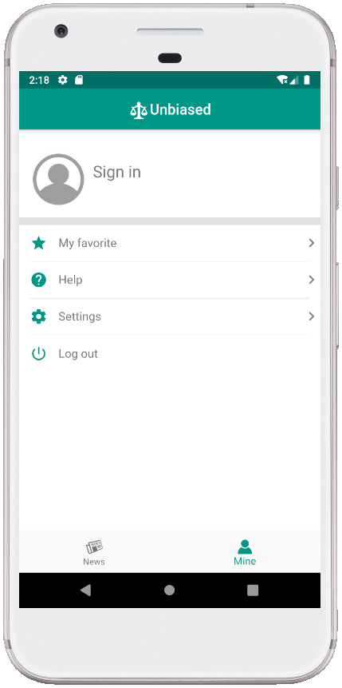
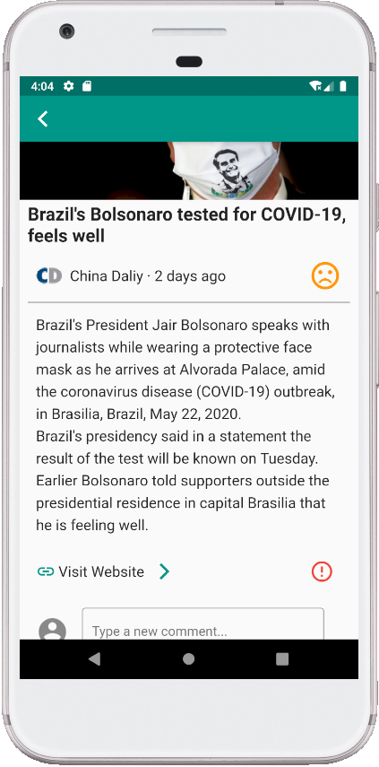
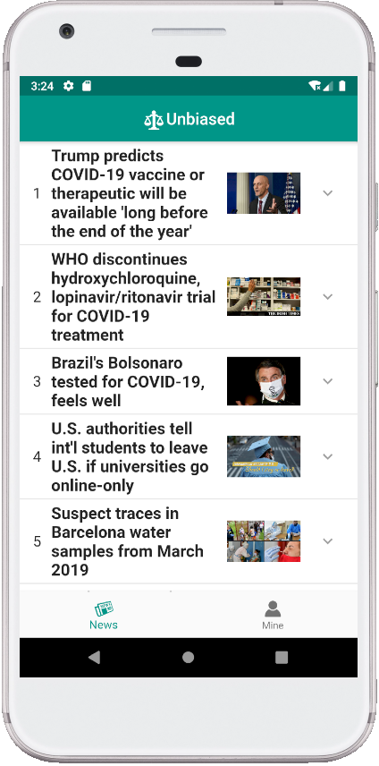
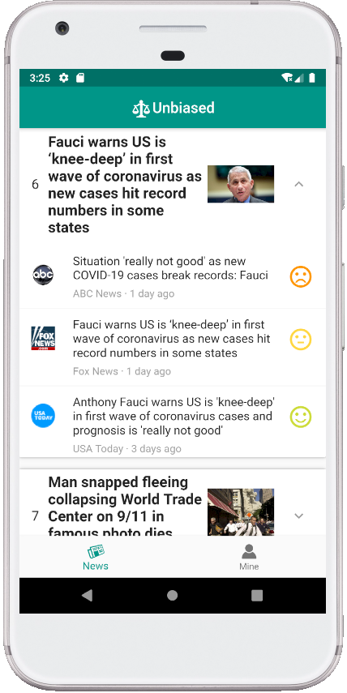
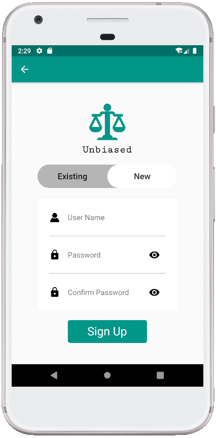

关于比赛
这次的Google Girl Hackathon全程是线上的，并且是一个长期项目的形式，所以体验其实和之前参加过那些项目类竞赛还挺像的。
参加前抱着的目的其实是想看看笔试题的。原定的参加流程是先准备简历，然后参加一个线上的测试，再正式地进入比赛流程。包括预赛、半决赛、决赛，最后的总决赛也是要去线下答辩。预赛是给出一个Idea的文档，半决赛实现，决赛答辩。
因为疫情的原因，取消了线上测试和现场决赛的部分，同时由个人赛瞬间变成了团体赛（猝不及防），最后和舍友Ruby、Kara一起组成了101000011（二进制的宿舍号）参加了比赛。
赛题
这次的赛题是以COVID-19为主，要求提出一些人们面对疫情时的解决方案，从而更好地度过疫情。
拿到赛题我的思考还是挺偏理工科程序员的，想着应该去做一些比较实际的App。我提出了三个方案（但是只记得两个了）：一个可以在线互动聊天or体感游戏交流的chatting room，主要服务那些因为不能线下聚会而缺少交流的朋友们；一个捐赠可追溯的系统，包括从捐赠方开始到受赠方及受赠用途所有的透明化，保证每个人、集体的捐赠都能被使用到该使用的用途。
后者的捐赠系统其实在决赛中有两个小组做出来了，而且做的都很棒，但是感觉大家的侧重点还是不太一样。我大概记得她们的侧重点更倾向于受赠方和捐赠方的匹配，以及如何进行管理捐赠等等，我的方案想的更多是如何保证整个过程的透明性。
后来大家经过讨论之后没有用我的方案，前一个实现难度有点大，后一个感觉市场上类似的产品（阿里巴巴的捐赠平台）已经有差不多的，很难做的出彩。
实现方案
最终我们的方案是一个多视角的新闻浏览App：Unbiased。方案的主要目的是提供多视角的新闻资讯，总而读者在浏览同一新闻时可以看到不同视角的报导，同时这些报导有对应的情绪分析，使得读者可以有辨别地去阅读不同的新闻，从而尽可能减少单一视角新闻带来的偏见和歧视。
对于每个相同内容的新闻，它们会位于同一个新闻组，新闻组打开就会有每个新闻对应的标题、情绪等，点进去会展示新闻的具体内容，包括报导的媒体、新闻原来的内容、新闻摘要、评论等等。
    方案是Ruby提出的，我主要负责划水（写了一个新闻详情页面），其他都是Ruby写的（惭愧）
附上demo Link：https://youtu.be/oCnLdIDYHfg
最后拿了⭐1st 和⭐ most popular prize，参赛的小姐姐们居然很喜欢我们作品，有点意外哈哈😄
思考
因为整个方案不是我设计的，最终也只写了一点界面，所以技术上的没啥好说的，只能讲一点对产品和比赛思考。
- 在做一个产品时，思考需要creative一点，但同时也要考虑实现的难度和实际上做出来的需要。我在很多情况下对于产品的思考还是过于偏针对某个现象，而不是考虑这个现象环节上的使用者是否真的需要，以及实际的操作难度。
- 虽然比赛是有一个赛题范围，但是产品的范围不应该被比赛限制。评分点有一个部分就是sustainable可持续性。比如如果过了这个疫情，你的产品是否还能继续发生作用呢？这样的扩展性不一定是技术本身带来的，也应该是做之前应该考虑的。
- 产品文档也应该以科研角度去思考。问题的来源是什么？问题定义是什么？产品是如何解决这些问题的？产品的设计细节？产品使用的注意事项？等等。
- 代码规范。尤其协作开发时要让队友和评委能拿到代码就能大概读懂！
- 展示的时候可以也以文档思路的方式展示，无论是讲故事还是直接展示，需要把产品的重点表达清楚。不一定要描述到所有细节，但是一定要让展示给人留下印象
（想起来之前比赛从登陆开始说起的这种展示……） - 第一次使用Flutter写前端，之前也接触其他前端的框架（Bootstrap、Vue.js这种），所以写起来也不是很难上手，但是配环境和运行安卓虚拟机实在太依赖机器的好坏了（实验室电脑真的飞速，我的笔记本经常和乌龟爬一样还卡）。Flutter的热重载真的很好用，不改变插件的情况下直接保存就能重新运行。第一次接触了云数据库LeanCloud，使用体验也很棒，希望有机会再用这两样写点有意思的东西
不能再划水了 - Ruby NB!